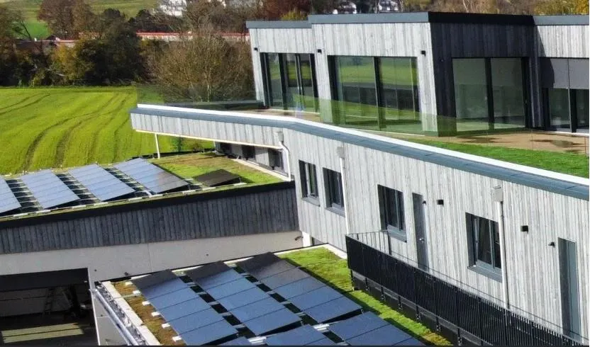

Wertvolle Flächen werden zurückgewonnen, Wasser zurückgehalten, die Bausubstanz geschützt. Für Neubau und Bestand — und bis 45° Dachneigung.

Signifikante Reduktion der Oberflächentemperatur der Dachhaut — spürbar in den oberen Geschossen.
Frische Luft im Gebäudeumfeld durch natürliche Verdunstungsprozesse der Vegetation.
Schutz vor UV-Strahlung und Hagel — deutlich längere Lebensdauer der gesamten Dachkonstruktion.
Das Wasserrückhaltevermögen reduziert den Bedarf an aufwendiger Entwässerungsinfrastruktur.
Verbesserung der Wasserspeicherfähigkeit und Rückgewinnung versiegelter Flächen im Gebäudeumfeld.
Habitat für Insekten und Vögel — für gesündere, vielfältigere Quartiere und urbane Biodiversität.
Gründach und Photovoltaik sind kein Entweder-oder. Im Gegenteil: Sie verstärken sich gegenseitig.
Die Verdunstung des Gründachs senkt die Moduloberfläche im Sommer. Weil PV-Module mit steigender Temperatur Leistung verlieren, steigt ihr Ertrag. Gleichzeitig liefert die Verschattung der Module einen Kleinklimaeffekt für die Vegetation darunter.

Viele Kommunen und Länder fördern Dachbegrünungen direkt oder über reduzierte Niederschlagsgebühren. In Kombination mit KfW- und BAFA-Programmen für PV und energetische Sanierung entstehen oft attraktive Gesamtpakete. Wir prüfen für Ihr Objekt, was möglich ist.
Statik, Neigung, Zugang — wir prüfen die Rahmenbedingungen.